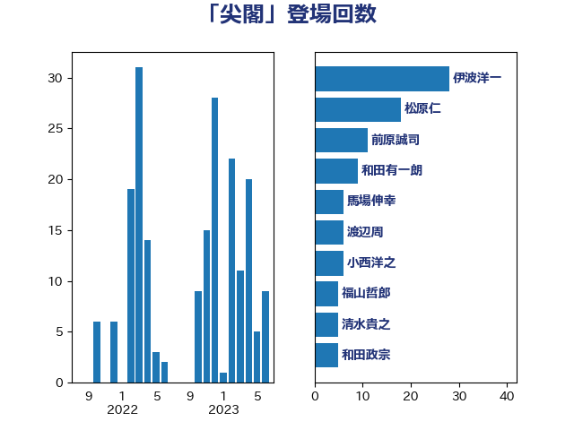

単語「尖閣」

| 浅田均 | 日本維新の会 | 25 回 |
| 佐藤正久 | 自由民主党 | 16 回 |
| 茂木敏充 | 自由民主党 | 16 回 |
| 高良鉄美 | 無所属 | 15 回 |
| 伊波洋一 | 無所属 | 13 回 |
| 岸信夫 | 自由民主党 | 13 回 |
| 杉本和巳 | 日本維新の会 | 13 回 |
| 渡辺周 | 立憲民主党 | 13 回 |
| 西銘恒三郎 | 自由民主党 | 12 回 |
| 上田清司 | 国民民主党 | 9 回 |
| 北村経夫 | 自由民主党 | 9 回 |
| 大塚耕平 | 国民民主党 | 9 回 |
| 高木啓 | 自由民主党 | 9 回 |
| 井上英孝 | 日本維新の会 | 7 回 |
| 前原誠司 | 国民民主党 | 7 回 |
| 足立康史 | 日本維新の会 | 7 回 |
| 和田有一朗 | 日本維新の会 | 6 回 |
| 小西洋之 | 立憲民主党 | 6 回 |
| 松原仁 | 立憲民主党 | 6 回 |
| 馬場伸幸 | 日本維新の会 | 6 回 |
| 吉良州司 | 無所属 | 5 回 |
| 和田政宗 | 自由民主党 | 5 回 |
| 柳ヶ瀬裕文 | 日本維新の会 | 5 回 |
| 篠原豪 | 立憲民主党 | 5 回 |
| 山谷えり子 | 自由民主党 | 4 回 |
| 赤羽一嘉 | 公明党 | 4 回 |
| 國場幸之助 | 自由民主党 | 3 回 |
| 大野泰正 | 自由民主党 | 3 回 |
| 山田宏 | 自由民主党 | 3 回 |
| 浦野靖人 | 日本維新の会 | 3 回 |
| 玉木雄一郎 | 国民民主党 | 3 回 |
| 秋葉賢也 | 自由民主党 | 3 回 |
| 菅義偉 | 自由民主党 | 3 回 |
| 青山繁晴 | 自由民主党 | 3 回 |
| 三宅伸吾 | 自由民主党 | 2 回 |
| 中曽根康隆 | 自由民主党 | 2 回 |
| 小田原潔 | 自由民主党 | 2 回 |
| 市村浩一郎 | 日本維新の会 | 2 回 |
| 末松義規 | 立憲民主党 | 2 回 |
| 榛葉賀津也 | 国民民主党 | 2 回 |
| 江藤拓 | 自由民主党 | 2 回 |
| 熊谷裕人 | 立憲民主党 | 2 回 |
| 玄葉光一郎 | 立憲民主党 | 2 回 |
| 福山哲郎 | 立憲民主党 | 2 回 |
| 近藤和也 | 立憲民主党 | 2 回 |
| 金城泰邦 | 公明党 | 2 回 |
| 長妻昭 | 立憲民主党 | 2 回 |
| 三木圭恵 | 日本維新の会 | 1 回 |
| 三浦信祐 | 公明党 | 1 回 |
| 下村博文 | 自由民主党 | 1 回 |
| 下条みつ | 立憲民主党 | 1 回 |
| 原口一博 | 立憲民主党 | 1 回 |
| 吉田宣弘 | 公明党 | 1 回 |
| 大西健介 | 立憲民主党 | 1 回 |
| 大野敬太郎 | 自由民主党 | 1 回 |
| 室井邦彦 | 日本維新の会 | 1 回 |
| 宮澤博行 | 自由民主党 | 1 回 |
| 小島敏文 | 自由民主党 | 1 回 |
| 山口壯 | 自由民主党 | 1 回 |
| 岡田克也 | 立憲民主党 | 1 回 |
| 平木大作 | 公明党 | 1 回 |
| 斎藤アレックス | 国民民主党 | 1 回 |
| 松川るい | 自由民主党 | 1 回 |
| 枝野幸男 | 立憲民主党 | 1 回 |
| 柴田巧 | 日本維新の会 | 1 回 |
| 片山さつき | 自由民主党 | 1 回 |
| 石井章 | 日本維新の会 | 1 回 |
| 石井苗子 | 日本維新の会 | 1 回 |
| 稲田朋美 | 自由民主党 | 1 回 |
| 舞立昇治 | 自由民主党 | 1 回 |
| 西田昌司 | 自由民主党 | 1 回 |
| 重徳和彦 | 立憲民主党 | 1 回 |
| 鈴木宗男 | 日本維新の会 | 1 回 |
| 音喜多駿 | 日本維新の会 | 1 回 |
| 高木かおり | 日本維新の会 | 1 回 |
| 齋藤健 | 自由民主党 | 1 回 |